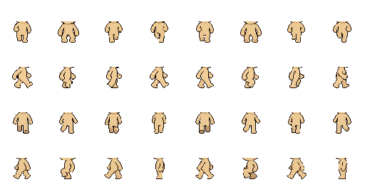
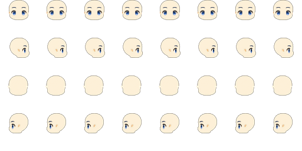
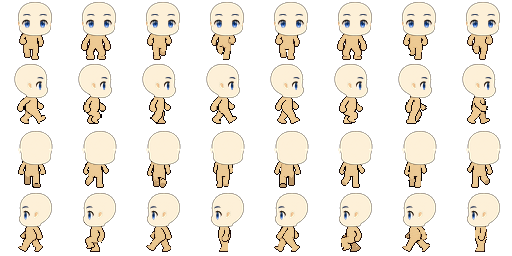
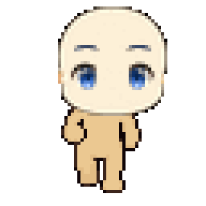
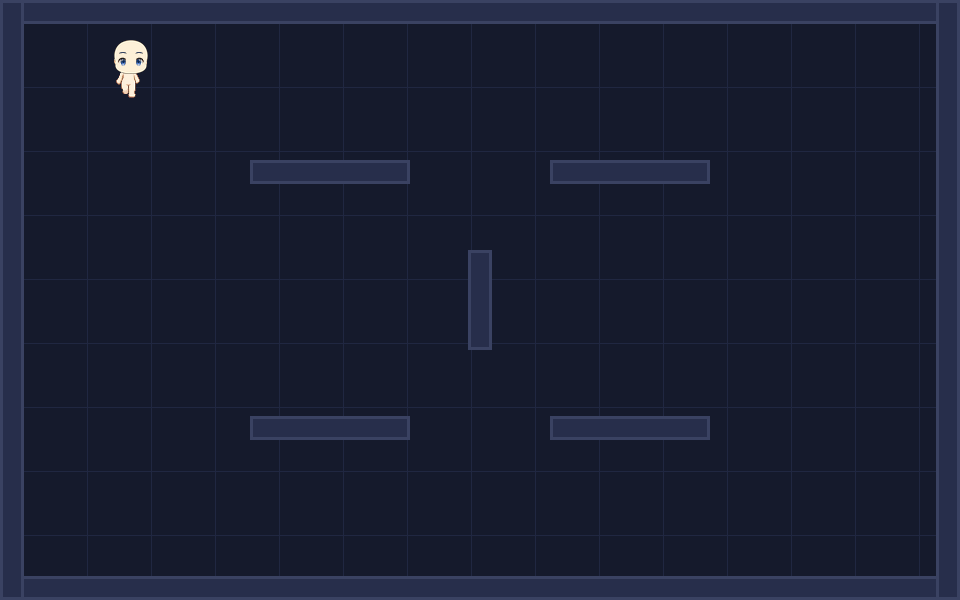
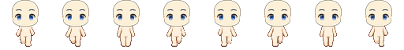
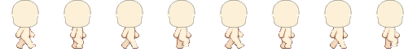
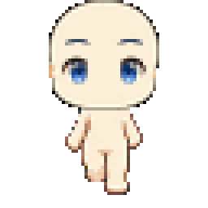
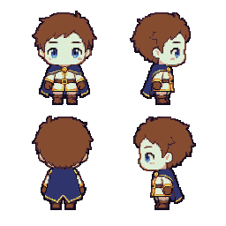

AssetsLab 当前预览
只展示当前测试基底、当前候选资源和最新自动捕获结果。
当前测试基底
身体来源为 latest generated body adapter；头部来源为 calibrated rebuild runtime。旧身体、RGS 代理、Skeleton2D 实验和旧 GIF 不在此页面。



运行预览 GIF


纵向候选与对齐检查
纵向身体仍是候选稿；前后方向头部当前使用独立 [0,0] 偏移，避免继承旧身体的水平标定。



风格实验

方向映射
| 行 | 方向 | 输入 | 当前来源 |
|---|---|---|---|
| 0 | front | S / down | latest body adapter；纵向模式使用 vertical front candidate |
| 1 | right | D / right | latest body adapter |
| 2 | back | W / up | latest body adapter；纵向模式使用 vertical back candidate |
| 3 | left | A / left | latest body adapter |
验证入口
tools/run_headless_tests.ps1 -RebuildHead -VerticalCandidate
tools/capture_walk_gif.ps1 -RebuildHead -VerticalCandidate -VerticalOnly
tools/serve_preview.ps1 -SnapshotName current